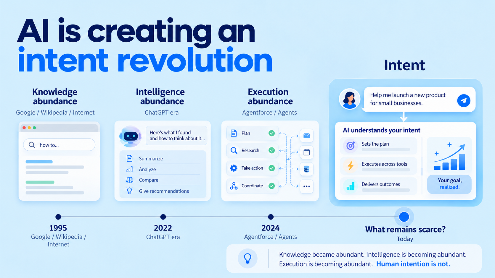

The internet made knowledge a commodity.
AI made intelligence one.
Agents are making execution one.
What remains?
Wanting something.
For most of human history, ideas stayed ideas. Not for lack of imagination. Because the distance between dream and reality was brutal.
So we built organizations to bridge that gap. Specialists. Planners. Layers of people whose entire job was converting someone else's idea into something real.
The person with the vision was almost never the person who saw it through.
AI is deleting the middle.
Consider what I'm building right now: a system that knows what I'm working on, remembers the state of every project, picks the right model for each task, delegates to agents, verifies their work, and lets me operate it from my phone.
Two years ago, that was a product spec — requiring a product manager, an architect, a UX designer, a backend engineer, a frontend engineer, DevOps, integrations, and a testing cycle.
Today, I described it to an AI.
The planning still exists. But most of it now happens in conversation between me and the machine.
We're already seeing this in the data. JetBrains' 2025 Developer Ecosystem Survey found that 69% of professional developers now regularly use AI coding tools.1 Of those, 77% save more than an hour per week — and 41% save eight hours or more. The trajectory is clear.
So what's becoming abundant?
And what isn't?
Wanting something.
The model can help you think through options. It can build whatever you describe. But it can't tell you what should exist. It can't feel the gap between what is and what should be. It can't decide this is worth making.
Here's the part that surprises people: when building gets cheap, taste gets more valuable, not less.
If everyone can produce 100 designs, the advantage isn't producing 100 designs. It's knowing which one deserves to exist.
If everyone can build an app, writing code isn't the differentiator. Knowing what should be built is.
If everyone can generate content, generating content isn't scarce. Knowing what is worth saying is.
Not eventually. Now.
The people who define the next decade aren't the ones who use AI fastest. They're the ones who are most clear about what they want — and disciplined enough to pursue it.
The Dream → Plan → Build cycle still exists. It just runs faster than ever.
The hardest part is still the first step.
Knowing what you're building.
And why it should exist.
1 JetBrains, Developer Ecosystem Survey 2025 — Artificial Intelligence. 69% of developers regularly use at least one AI coding assistant, agent, or code editor. 77% of AI tool users save more than one hour per week.